A continuación, se presenta una guía de gráficos diseñada para explorar y describir el comportamiento de los datos. La guía está organizada según la cantidad y el tipo de variables que se desean visualizar. Se muestra el gráfico creado usando el paquete base de R y usando el paquete ggplot, el cual se instala mediante el comando install.packages("ggplot2")
Para obtener información más detallada sobre el uso y las configuraciones adicionales de las funciones empleadas, se utiliza ?nombre_funcion en la consola de R. Además, en el sitio web R Charts se encuentra disponible una amplia variedad de gráficos y recursos de interés relacionados.
4.1 Gráficos univariados
4.1.1 Variable categórica
4.1.1.1 Gráfico de barras verticales
# Paquete baseconteo <-table(Base_prueba_aspirantes$ESTRATO_ORIG) # Tabla de frecuenciasbarplot(conteo, # Datosmain ="Gráfico de barras por estrato", # Títuloxlab ="", ylab ="Frecuencia", # Títulos de los ejesylim =c(0, max(conteo)*1.1), # Rango del eje ycol ="skyblue", # Color de las barrasspace =1, # Espacio entre las barraslas =2) # Orientación de las etiquetas del eje X
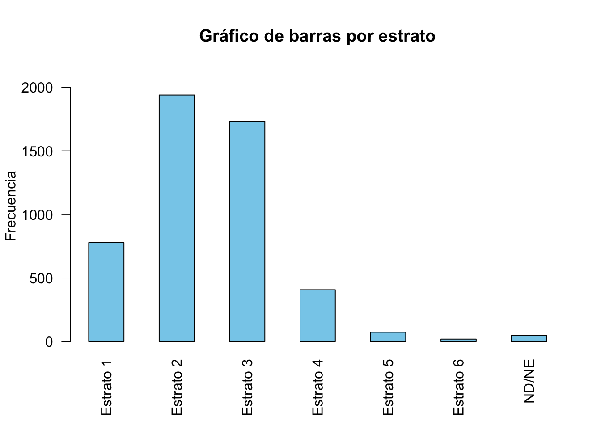
# ggplotlibrary(ggplot2)ggplot(Base_prueba_aspirantes, aes(x = ESTRATO_ORIG)) +# Datos y ejesgeom_bar(fill ="skyblue", color ="black", width =0.5) +# Configuración de las barraslabs(title ="Gráfico de barras por estrato", x ="Estrato", y ="Frecuencia") +# Títulostheme_minimal() +# Tematheme(axis.text.x =element_text(angle =45, hjust =1),plot.title =element_text(hjust =0.5, size =14, face ="bold"),plot.subtitle =element_text(hjust =0.5, size =12),legend.position ="top")
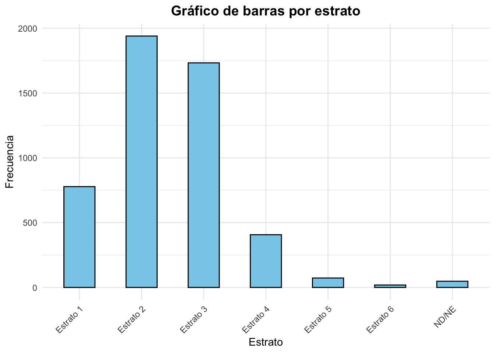
4.1.1.2 Gráfico de barras horizontales
# Paquete baseconteo <-sort(table(Base_prueba_aspirantes$DEP_NAC), decreasing =FALSE) # Tabla de frecuencias ordenadapar(mar =c(5, 12, 1, 5)) # Ajusta las márgenesbarplot_heights <-barplot(conteo, # Datoshoriz =TRUE, # Barras horizontaleslas =1, # Orientación de las etiquetas del eje Xcol ="skyblue", border ="white", # Configuración de las barrasmain ="Gráfico de barras por departamentos de nacimiento", # Títuloxlab ="Frecuencia", ylab ="", # Títulos de los ejesxlim =c(0, max(conteo)*1.1), # Rango del eje Xcex.names =0.5, # Ajusta tamaño de etiquetascex.axis =0.8, # Ajusta tamaño de ejescex.main =1.1) # Ajusta tamaño del títulotext(x = conteo, # Etiquetas de la frecuenciay = barplot_heights, # Altura correspondiente a las barraslabels = conteo, # Valores de frecuenciacex =0.6, # Tamaño de textopos =4) # Posición del texto a la derecha
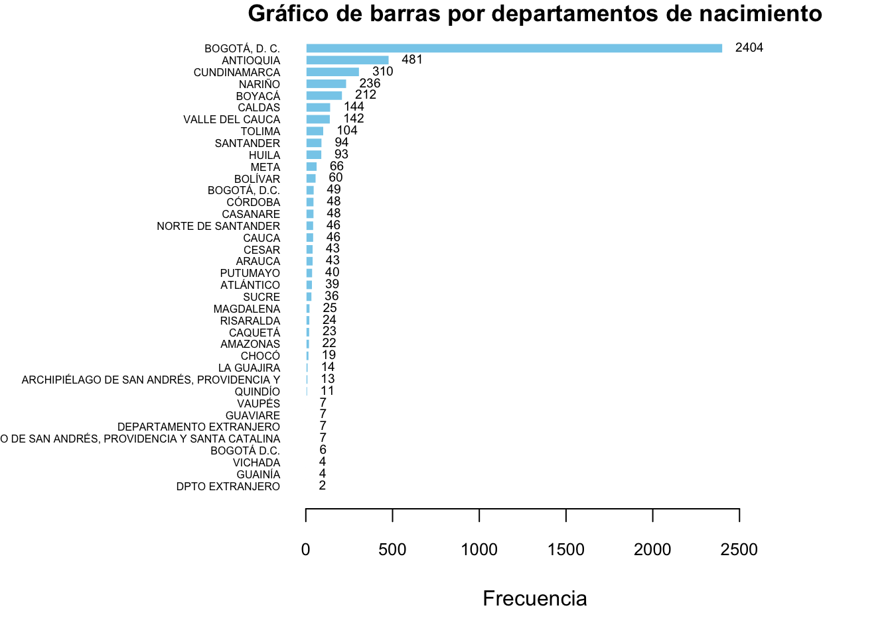
# ggplotlibrary(ggplot2)Base_prueba_aspirantes %>%mutate(DEP_NAC = stringr::str_wrap(DEP_NAC, width =30)) %>%# Ajusta etiquetas largas con saltos de líneacount(DEP_NAC, sort =TRUE) %>%# Conteodrop_na() %>%# Elimina datos faltantesggplot(aes(x =reorder(DEP_NAC, n), y = n)) +# Ejesgeom_bar(stat ="identity", fill ="skyblue") +# Configuración de las barrasgeom_text(aes(label =round(n, 0)), hjust =-0.2, size =3) +# Etiquetas del conteolabs(title ="Gráfico de barras por departamentos de nacimiento", x ="", y ="Frecuencia") +# Títulosscale_y_continuous(limits =c(0, max(conteo)*1.1)) +# Rango del eje Xcoord_flip() +# Vuelve las barras horizontalestheme_minimal() +# Tematheme(axis.text.y =element_text(angle =0, hjust =1, size =6)) +theme(plot.title =element_text(hjust =0.5, size =14, face ="bold"),plot.subtitle =element_text(hjust =0.5, size =12),legend.position ="top")
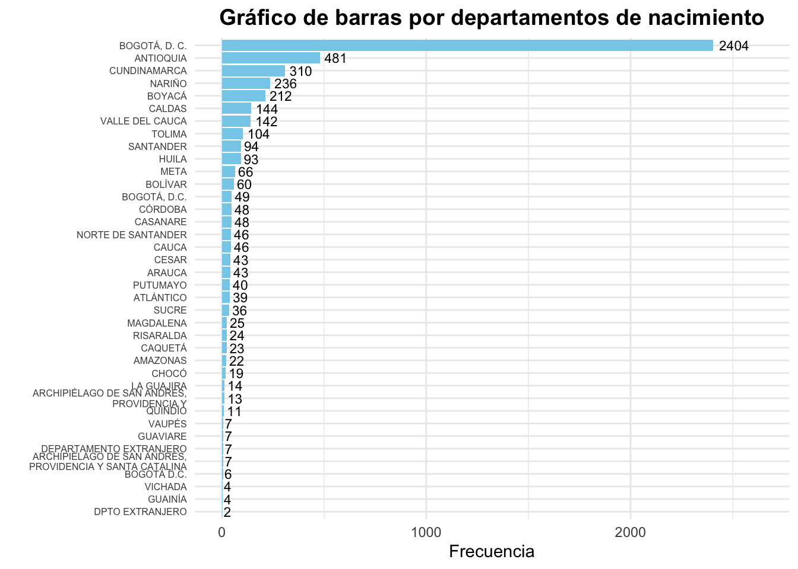
4.1.1.3 Gráfico circular
# Paquete baseconteo <-table(Base_prueba_aspirantes$SEXO) # Tabla de frecuenciaspie(conteo, # Datosmain ="Gráfico circular por sexo", # Títulocol =c("skyblue","plum"), border="white", # Coloreslabels =paste(names(conteo), ":", round(prop.table(conteo) *100, 2), "%"), # Etiquetascex =1.1) # Tamaño de las etiquetas
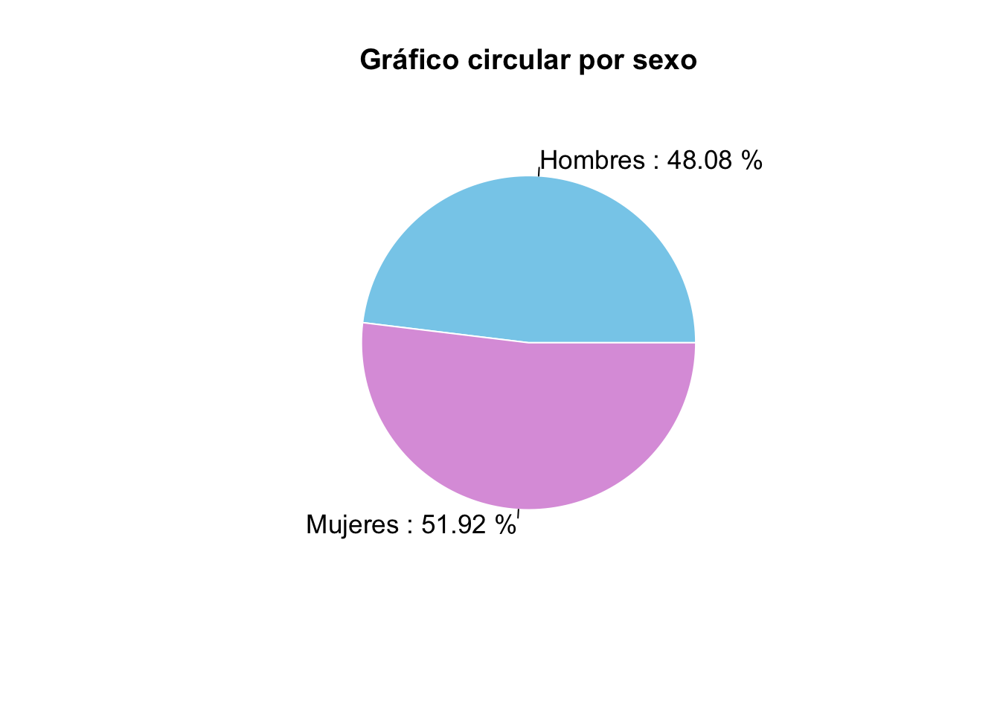
# ggplotlibrary(ggplot2)Base_prueba_aspirantes %>%count(SEXO) %>%# Conteomutate(percentage = n /sum(n) *100) %>%# Calculo del porcentajeggplot(aes(x ="", y = percentage, fill = SEXO)) +# Ejesgeom_bar(stat ="identity") +coord_polar("y") +# Convierte a coordenadas polaresgeom_text(aes(label =paste0(round(percentage, 2), "%")), position =position_stack(vjust =0.5), size =5) +# Ajusta posición y tamaño de las etiquetaslabs(title ="Gráfico circular por sexo", fill ="Sexo") +# Títulosscale_fill_manual(values =c("Hombres"="skyblue", "Mujeres"="plum")) +# Colorestheme_void() +# Tematheme(plot.title =element_text(hjust =0.5, size =14, face ="bold"),plot.subtitle =element_text(hjust =0.5, size =12),legend.position ="right")
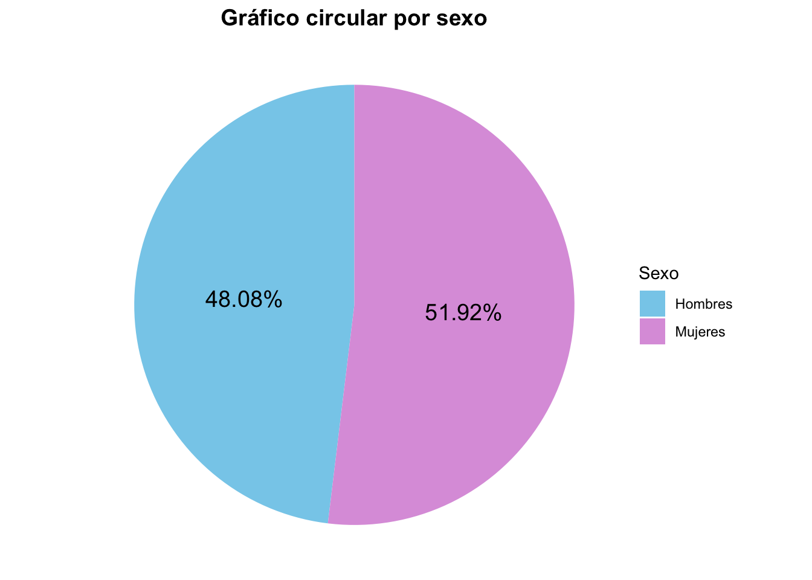
4.1.2 Variable cuantitativa
4.1.2.1 Histograma
# Paquete basehist(Base_prueba_aspirantes$PTOTAL, # Datosmain ="Histograma del puntaje total", # Títuloxlab ="Puntaje total", ylab ="Frecuencia", # Título de los ejesxlim =c(-20,1000), # Rango del eje Xcol ="skyblue", border ="white") # Color de las barras
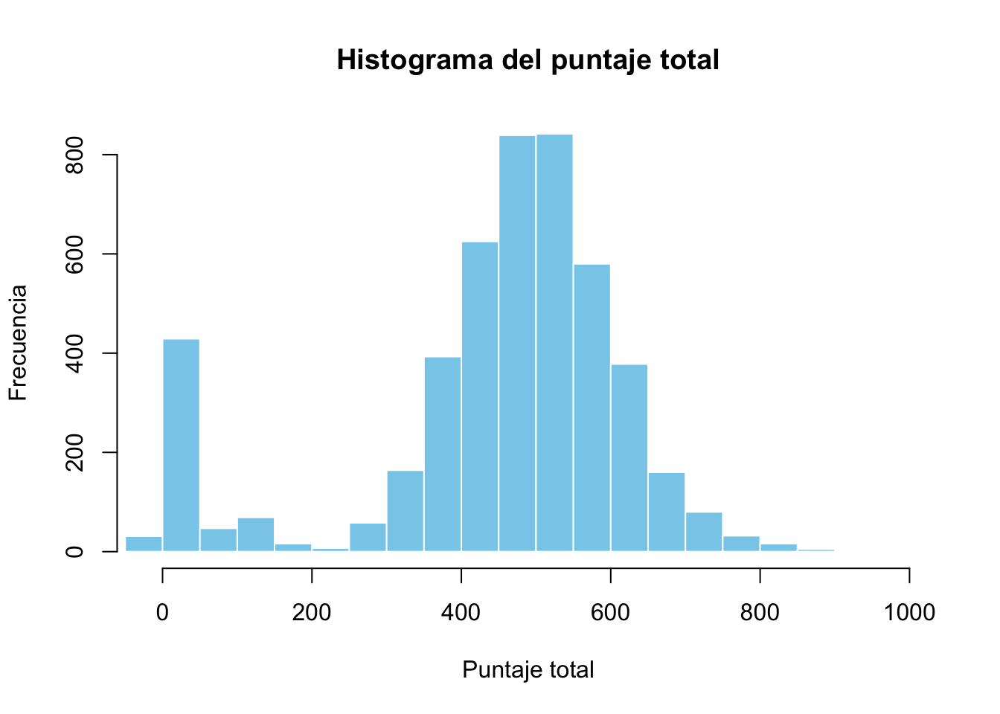
# ggplotlibrary(ggplot2)Base_prueba_aspirantes %>%select(PTOTAL) %>%drop_na() %>%# Elimina datos faltantesggplot(aes(x = PTOTAL)) +# Ejegeom_histogram(binwidth =50, fill ="skyblue", color ="white") +# Configuración de las barraslabs(title ="Histograma del puntaje total", x ="Puntaje total", y ="Frecuencia") +# Títulostheme_minimal() +# Tematheme(plot.title =element_text(hjust =0.5, size =14, face ="bold"),plot.subtitle =element_text(hjust =0.5, size =12),legend.position ="right")
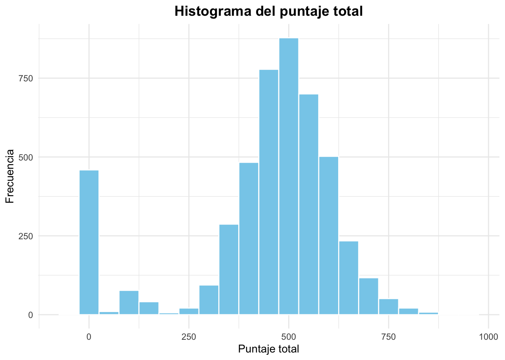
4.1.2.2 Gráfico de densidad
# Paquete basedensidad_edad <-density(Base_prueba_aspirantes$EDAD_MOD, na.rm =TRUE) # Calculo de la densidadplot(densidad_edad, # Datosmain ="Gráfico de densidad de la edad de los aspirantes", # Títuloxlab ="Edad", ylab ="Densidad", # Títulos de los ejescol ="blue", # Color de la línealwd =2, # Grosor de la líneacex.main =1.1, # Tamaño del títulocex.lab =1, # Tamaño de las etiquetas de los ejescex.axis =0.9) # Tamaño de los números en los ejespolygon(densidad_edad, col ="skyblue", border ="blue") # Agregar el área bajo la curva (relleno)
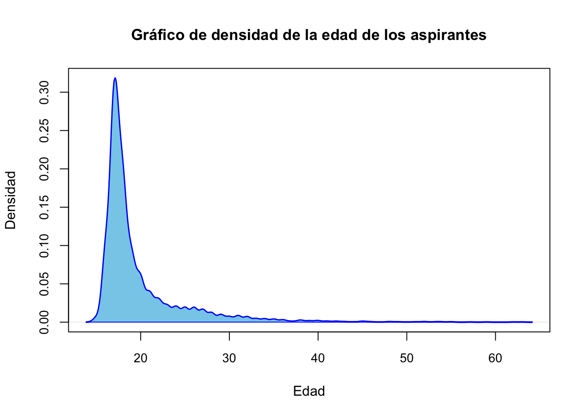
# ggplotlibrary(ggplot2)Base_prueba_aspirantes %>%select(EDAD_MOD) %>%drop_na() %>%# Elimina datos faltantesggplot(aes(x = EDAD_MOD)) +# Ejesgeom_density(fill ="skyblue", color ="blue", alpha =1) +# Densidad con relleno y bordelabs(title ="Gráfico de densidad de la edad de los aspirantes", x ="Edad", y ="Densidad") +# Títulostheme_minimal() +# Tematheme(plot.title =element_text(hjust =0.5, size =14, face ="bold"), axis.title =element_text(size =12), axis.text =element_text(size =10))
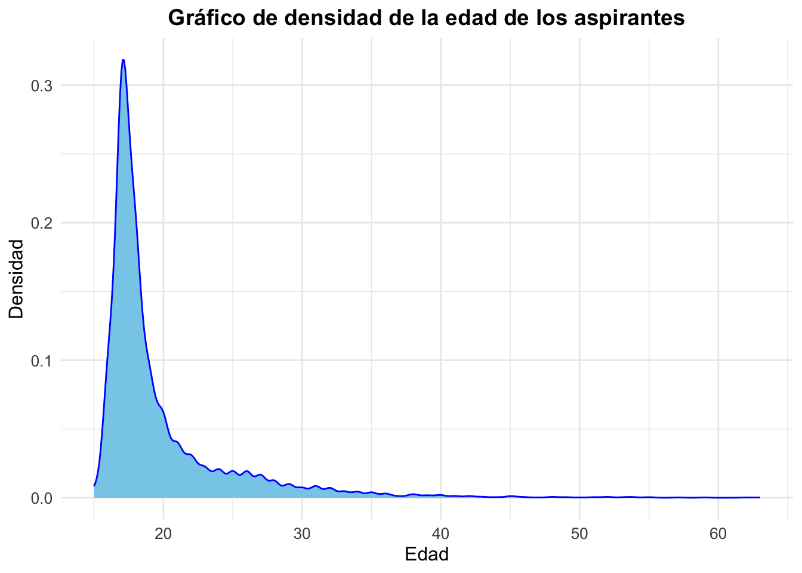
4.1.2.3 Boxplot
# Paquete baseboxplot(Base_prueba_aspirantes$PTOTAL, # Datosmain ="Boxplot del puntaje total", ylab ="Puntaje total", # Títuloscol ="skyblue", # Color de la cajapch =19, # Tipo de punto para los outlierscex =0.5) # Tamaño de los outliers
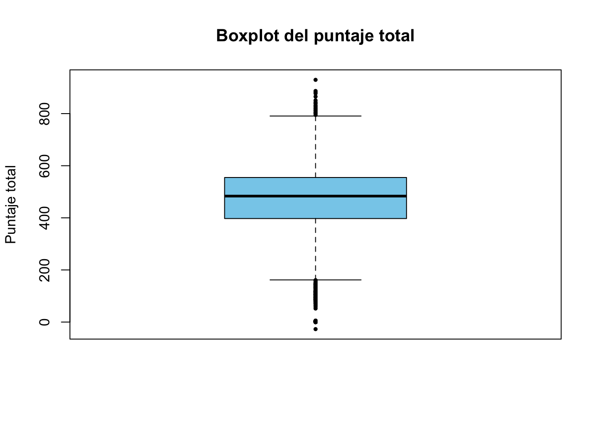
# ggplotlibrary(ggplot2)Base_prueba_aspirantes %>%select(PTOTAL) %>%drop_na() %>%# Elimina datos faltantesggplot(aes(y = PTOTAL)) +# Ejegeom_boxplot(fill ="skyblue", color ="black", # Configuración de la cajaoutlier.shape =19) +# Configuración de datos atípicoslabs(title ="Boxplot del puntaje total", y ="Puntaje total") +theme_minimal() +# Tematheme(plot.title =element_text(hjust =0.5, size =14, face ="bold"), axis.title =element_text(size =12), axis.text =element_text(size =10))
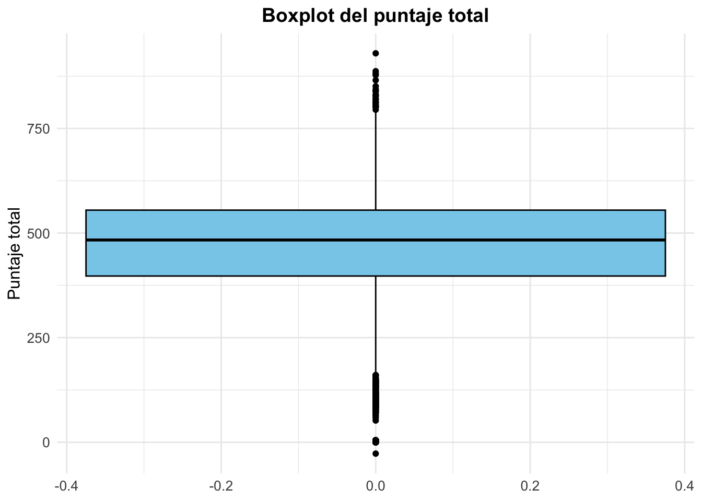
4.2 Gráficos multivariados
4.2.1 Variables categóricas
4.2.1.1 Gráfico de barras
# Paquete baseconteo <-table(Base_prueba_aspirantes$SEXO,factor(Base_prueba_aspirantes$CAT_EDAD,levels =rev(levels(Base_prueba_aspirantes$CAT_EDAD)))) # Tabla de frecuenciaspar(mar =c(5, 10, 4, 2)) # Ajusta las márgenesbar_positions <-barplot(conteo, # Datosbeside =TRUE, # No apilar barrashoriz =TRUE, # Barras horizontalescol =c("skyblue", "plum"), border ="white", # Colores de las barrasmain ="Gráfico de barras de los grupos de edad por sexo", # Títuloxlab ="Frecuencia", ylab ="", # Títulos de los ejesxlim =c(0, max(conteo)*1.1), # Rango del eje Xlas =1, # Orientación de las etiquetas del eje Ycex.main =1.2, cex.lab =1, cex.axis =0.7, cex.names =0.8, # Tamañoslegend.text =TRUE, # Incluir leyendaargs.legend =list(x ="top", # Posición de la leyendatitle ="", horiz =TRUE,bty ="n", # Sin borde en la leyendacex =0.9, # Tamaño del texto de la leyendainset =-0.15)) # Ajusta el espacio hacia abajo si es necesariotext(x = conteo, # Posición Xy = bar_positions, # Posición en Ylabels = conteo, # Valores de frecuenciacex =0.6, pos =4) # Tamaño y posición de las etiquetas
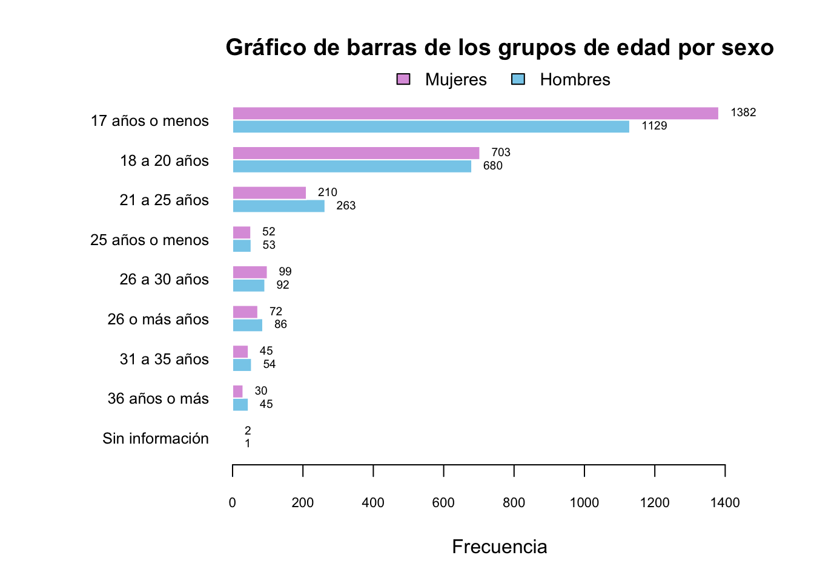
# ggplotlibrary(ggplot2)Base_prueba_aspirantes %>%count(CAT_EDAD, SEXO, sort =TRUE) %>%# Conteoggplot(aes(x =reorder(CAT_EDAD, n), y = n, fill = SEXO)) +# Ejesgeom_bar(stat ="identity", position =position_dodge(width =0.9), width =0.8) +# Configuración de las barrasgeom_text(aes(label =round(n, 0)), position =position_dodge(width =0.9), hjust =-0.2, size =2.5) +# Configuración de la etiquetas de conteolabs(title ="Gráfico de barras de los grupos de edad por sexo", # Títulox ="Grupo de edad", y ="Frecuencia", fill ="") +# Títulos de los ejesscale_fill_manual(values =c("Hombres"="skyblue", "Mujeres"="plum")) +# Colorescoord_flip() +# Barras horizontalestheme_minimal() +# Tematheme(axis.text.y =element_text(angle =0, hjust =1),plot.title =element_text(hjust =0.5, size =14, face ="bold"),plot.subtitle =element_text(hjust =0.5, size =12),legend.position ="top")
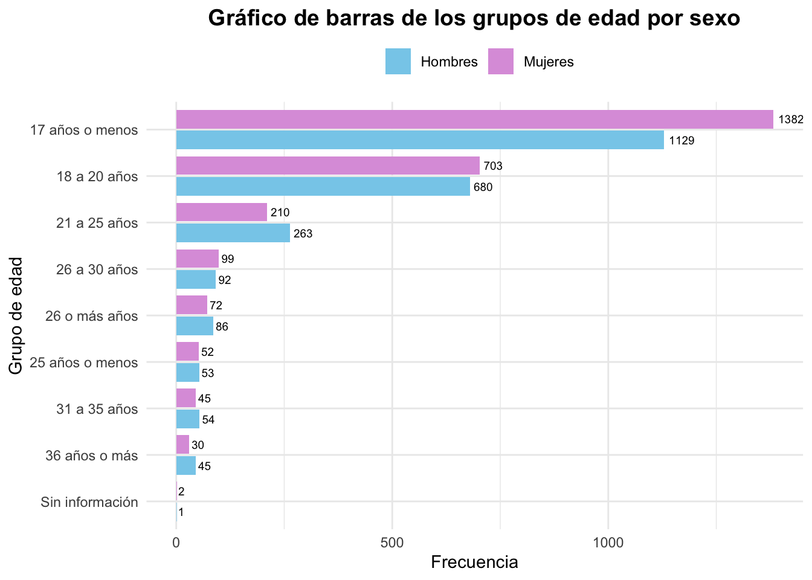
Si se desea contruir el gráfico con barras apiladas en lugar de barras paralelas, se debe ajustar el argumento beside = FALSE en la función barplot y ajustar la posición de las etiquetas. Por otro lado, usando ggplot se debe reemplazar position_dodge(width = 0.9) por position = "stack" en geom_bar y por position = position_stack(vjust = 0.5) en geom_text respectivamente.
4.2.2 Variables continuas
4.2.2.1 Gráfico de dispersión
# Paquete baseplot(iris$Sepal.Length, iris$Petal.Length, # Datosmain ="Gráfico de dispersión entre Sepal.Length y Petal.Length", # Título xlab ="Sepal.Length", ylab ="Petal.Length", # Títulos de los ejespch =16, cex =1, col ="skyblue") # Tipo, tamaño y color de los puntosabline(lm(Petal.Length ~ Sepal.Length, data = iris), # Agrega la línea de regresióncol ="black", lwd =1, lty =2) # Color, grosor y tipo de la línea
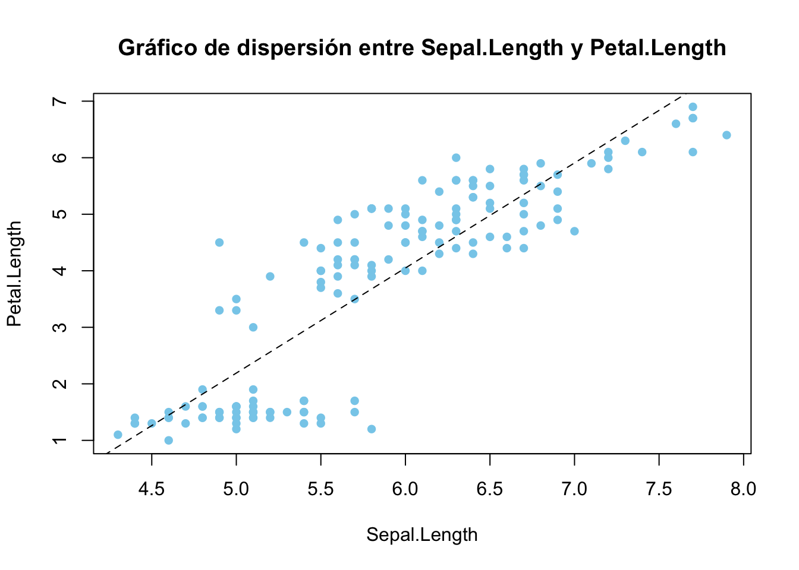
# ggplotlibrary(ggplot2)iris %>% dplyr::select(Sepal.Length, Petal.Length) %>%drop_na() %>%# Elimina datos faltantesggplot(aes(x = Sepal.Length, y = Petal.Length)) +geom_point(color ="skyblue", alpha =0.6) +# Configuración de los puntosgeom_smooth(method ="lm", color ="black", se =FALSE, size =0.5, linetype ="dashed") +# Línea de regresiónlabs(title ="Gráfico de dispersión entre Sepal.Length y Petal.Length", # Títulox ="Sepal.Length", y ="Petal.Length") +# Títulos de los ejestheme_minimal() +# Tematheme(plot.title =element_text(hjust =0.5, size =16, face ="bold"),plot.subtitle =element_text(hjust =0.5, size =12),legend.position ="top")
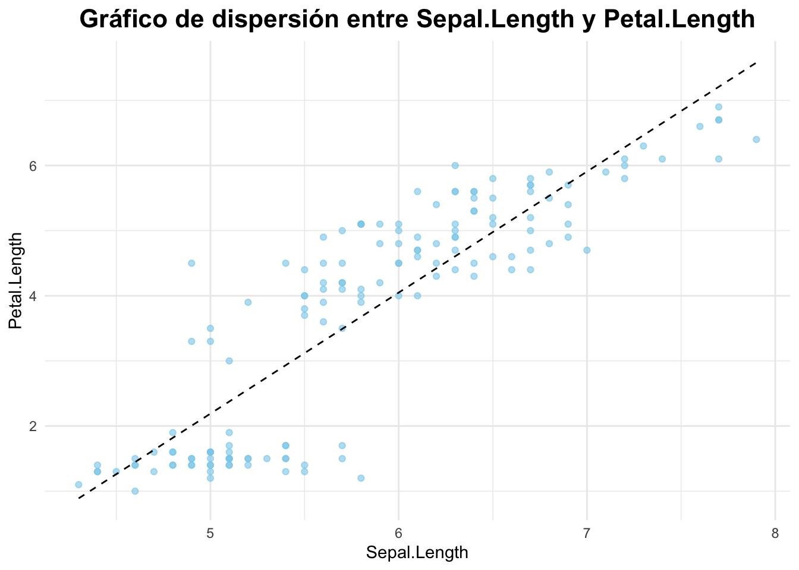
4.2.2.2 Matriz de correlación
library(corrplot)iris %>%select(1,2,3,4) %>%cor() %>%# Calculo de la matriz de correlacióncorrplot.mixed(upper ="circle", # Triángulo superiorlower ="number", # Triángulo inferiortl.col ="black", tl.cex =0.8, # Color y tamaño de las etiquetasupper.col =colorRampPalette(c("skyblue", "plum"))(20), # Colores de los círculoslower.col =colorRampPalette(c("skyblue", "plum"))(20), # Colores de los númerostitle ="Matriz de Correlación", # Títulomar =c(0, 0, 1, 0)) # Márgenes
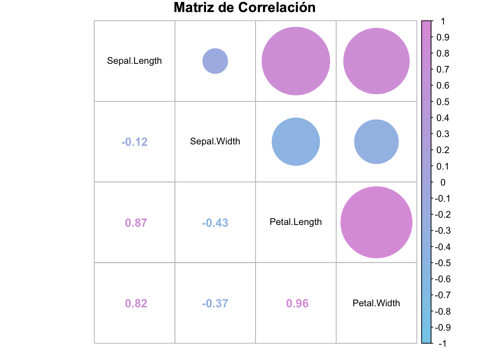
4.2.2.3 Gráfico de serie temporal
# Paquete baseconteo <-table(Base_prueba_aspirantes$YEAR) # Conteo por añoplot(names(conteo), conteo, type ="b", col ="skyblue", pch =19, cex =1, lwd =2, # Configuración de puntos y líneasmain ="Serie de tiempo anual", xlab ="Año", ylab ="Número de aspirantes", # Títulosylim =c(0, max(conteo)*1.1), xaxt ="n") # Rango del eje Yaxis(1, names(conteo), las =2) # Ajusta las etiquetas del eje Xaxis(2, seq(from =0, to =350, by =50), las =1) # Ajusta las etiquetas del eje Ytext(names(conteo), conteo, labels = conteo, pos =3, col ="black", cex =0.8) # Agrega etiquetas a cada punto
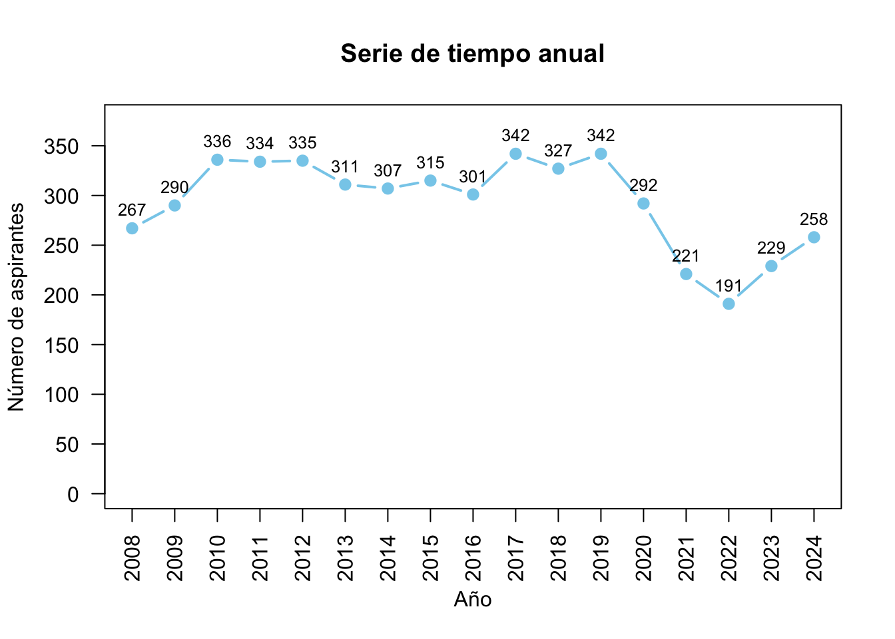
# ggplotlibrary(ggplot2)Base_prueba_aspirantes %>%group_by(YEAR) %>%count() %>%# Conteo por añoggplot(aes(x = YEAR, y = n)) +# Ejesgeom_line(color ="skyblue", size =1) +# Línea de la serie de tiempogeom_point(color ="skyblue", size =2) +# Puntos en cada fechageom_text(aes(label = n), vjust =-1, color ="black", size =3) +# Etiquetas en cada puntolabs(title ="Serie de tiempo anual", x ="Año", y ="Número de aspirantes") +# Títulosscale_y_continuous(limits =c(0, max(conteo)*1.1)) +# Rango del eje Ytheme_minimal() +# Tematheme(plot.title =element_text(hjust =0.5, size =14, face ="bold"))
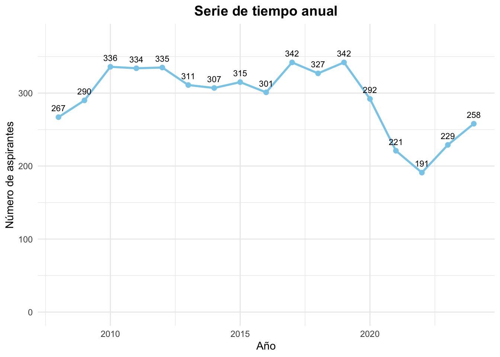
4.2.3 Variables categóricas y continuas
4.2.3.1 Gráfico de densidades
# ggplotlibrary(ggplot2)Medias <- Base_prueba_aspirantes %>%group_by(ESTRATO) %>%summarize(mean_ptotal =mean(PTOTAL, na.rm =TRUE), n =n()) # Calcula la media y el número de observacionesBase_prueba_aspirantes %>%select(PTOTAL, ESTRATO) %>%drop_na() %>%# Elimina datos faltantesggplot(aes(x = PTOTAL, fill =factor(ESTRATO))) +# Ejesgeom_density(alpha =0.6) +# Densidades con transparenciageom_vline(data = Medias, aes(xintercept = mean_ptotal), linetype ="dotted", color ="skyblue", size =1) +# Líneas verticales para la mediageom_label(data = Medias, aes(x = mean_ptotal, y =0, label =paste("Promedio:", round(mean_ptotal, 0), " - # Obs:", n)), angle =0, color ="skyblue", fill ="white", size =3, label.padding =unit(0.2, "lines")) +# Etiquetaslabs(title ="Gráfico de densidades del puntaje total por estrato", # Títulox ="Puntaje Total", y ="Densidad", fill ="Estrato") +# Títulos de los ejesscale_fill_brewer(palette ="Set2") +# Paleta de coloresfacet_wrap(~ESTRATO, scales ="free") +# Separar distribucionestheme_minimal() +# Tematheme(plot.title =element_text(hjust =0.5, size =14, face ="bold"),plot.subtitle =element_text(hjust =0.5, size =12),legend.position ="top")
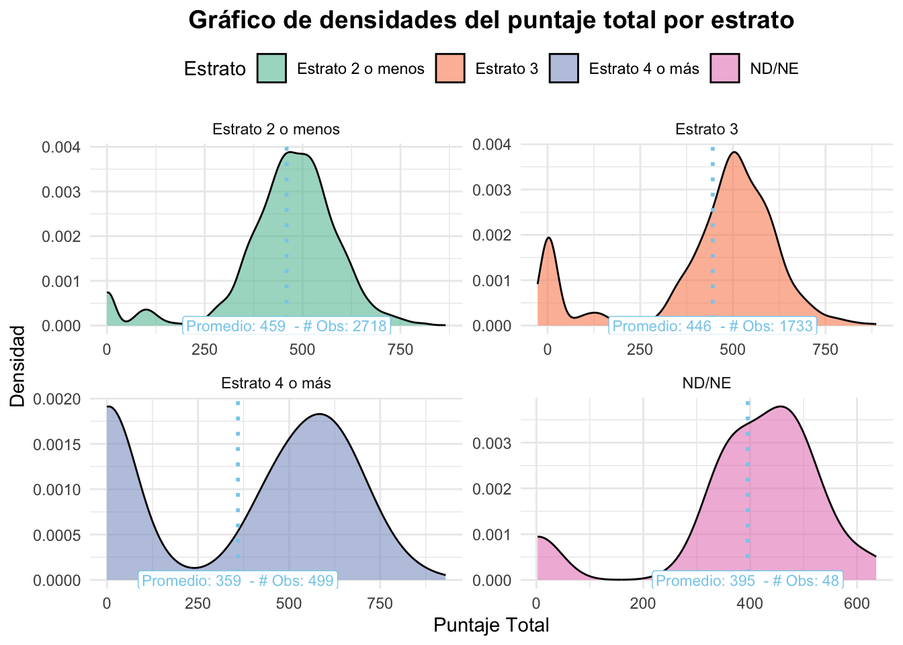
Por supuesto, en este caso es posible reemplazar el gráfico de densidades por otro tipo de gráficos, por ejemplo, histogramas.
4.2.3.2 Boxplot
# Paleta de coloreslibrary(paletteer)# Paquete basedatos <-na.omit(Base_prueba_aspirantes[, c("INS_SEDE_NOMBRE", "PTOTAL")]) # Selecciona variables y elimina datos faltantesboxplot(PTOTAL ~ INS_SEDE_NOMBRE, # Fórmula > v. cuantitativa ~ v. cualitativadata = datos,main ="Boxplot del puntaje total por sede de inscripción", # Títuloxlab ="Sede", ylab ="Puntaje total", # Títulos de los ejescol =paletteer_d("ggsci::blue_material"), border ="black", # Colores de las cajasoutline =TRUE, outcol ="black", outpch =8, cex =0.5, # Configuración de los valores atípicoslas =2, cex.axis =0.7) # Configuración de los ejesmeans <-tapply(datos$PTOTAL, datos$INS_SEDE_NOMBRE, mean, na.rm =TRUE) # Calcula la media de cada boxplotpoints(1:length(means), means, pch =23, bg ="white", cex =1.2) # Punto de la media en blanco
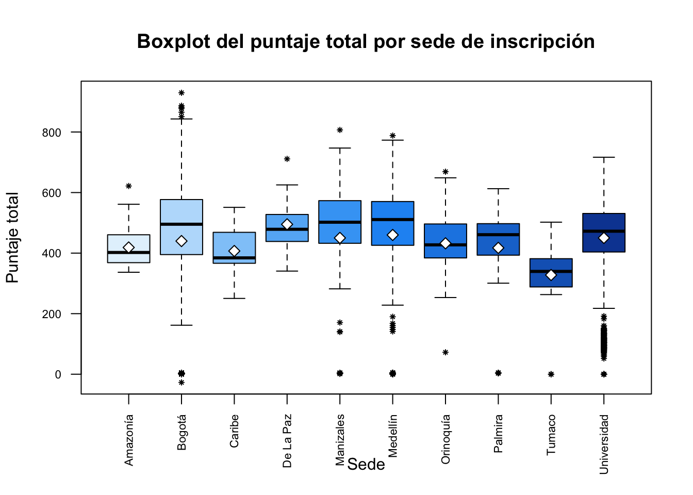
library(ggplot2)Base_prueba_aspirantes %>%select(INS_SEDE_NOMBRE, PTOTAL) %>%drop_na() %>%# Elimina datos faltantesggplot(aes(x =factor(INS_SEDE_NOMBRE), y = PTOTAL, fill =factor(INS_SEDE_NOMBRE))) +geom_boxplot(alpha =0.7, outlier.color ="black", outlier.shape =8, outlier.size =0.5) +# Boxplot con valores atípicosstat_summary(fun ="mean", geom ="point", shape =23, size =2, fill ="white") +# Mostrar la mediascale_fill_manual(values =paletteer_d("ggsci::blue_material")) +# Paleta de coloreslabs(title ="Boxplot del puntaje potal por sede de inscripción", # Títulox ="Sede", y ="Puntaje total", fill ="Sede") +# Título de los ejestheme_minimal() +# Tematheme(plot.title =element_text(hjust =0.5, size =14, face ="bold"),axis.text.x =element_text(angle =45, hjust =1))